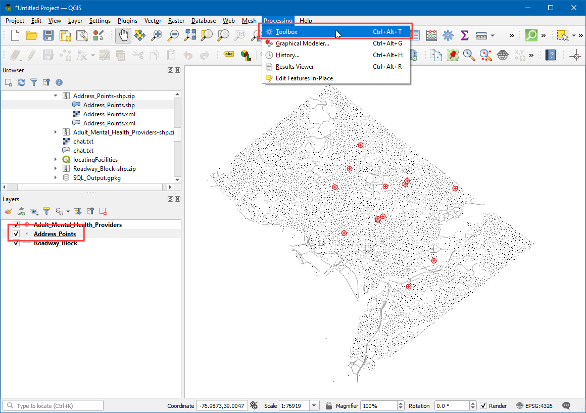
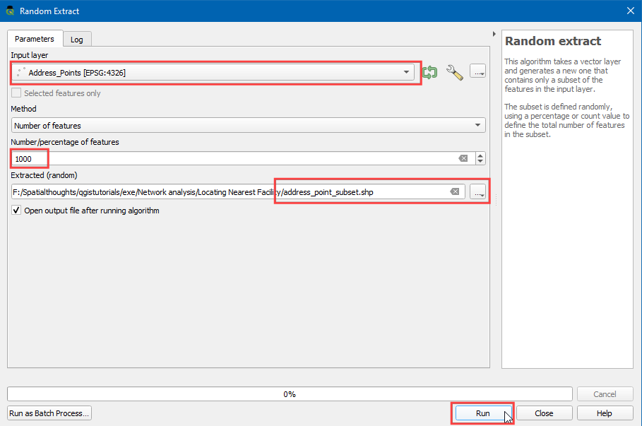
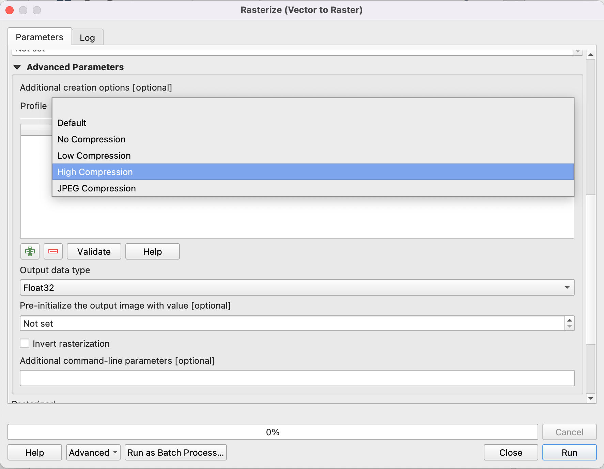
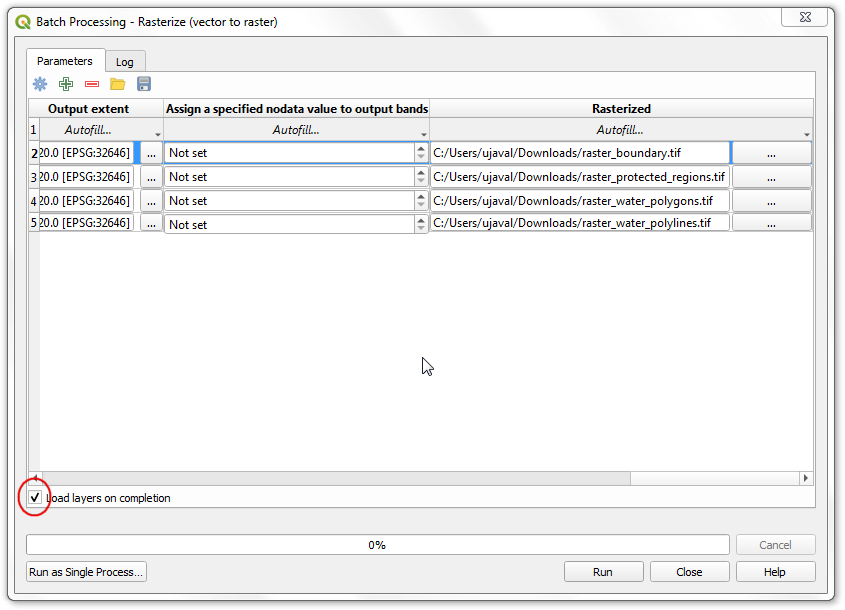
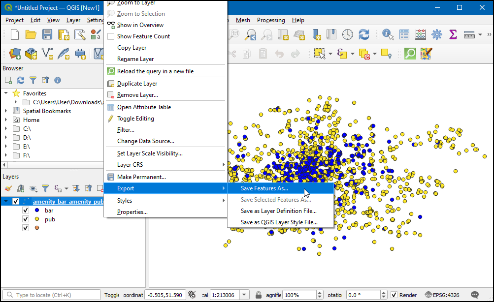

Ujaval Gandhi
Ujaval GandhiПоиск и загрузка данных OpenStreetMap (QGIS3)¶
Серьезным этапом решения ГИС-задач является получение исходных данных высокого качества. Отличным источником таких данных является бесплатный и общедоступный OpenStreetMap(OSM). База данных OSM поддерживает все типы картографических данных: линейные объекты (улицы), точки (сведения о местах), площадные объекты (контуры зданий и административные границы). Модуль QuickOSM позволяет выгрузить данные OSM в ГИС-формате в QGIS. Данное руководство описывает процесс поиска и загрузки данных OSM посредством этого модуля.
Обзор задания¶
Мы выгрузим из OpenStreetMap все бары и пабы Лондона, а затем сохраним их как отдельный векторный слой.
Также Вы научитесь¶
Делать множественные запросы в модуле QuickOSM.
Методика¶
Найдите и установите модуль QuickOSM из официального репозитория QGIS. См. руководство по загрузке расширений: Использование модулей расширения. Не забудьте поставить галочку напротив модуля. Нажмите Close.

Когда установка будет завершена, запустите модуль, нажав .

Во вкладке Quick query можно установить фильтр для конкретного набора данных. Атрибуты объектов будут сохранены как Tags. Теги представлены связкой ключ/значение. Ключ - это вид объекта, а значение - его конкретная форма. Список тегов для разных типов объектов представлены на wiki странице OSM Map Features . Бары мы будем искать по тегу
amenity:bar, а пабы -amenity:pub. В первую очередь выгрузим бары. В выпадающем меню выберитеamenityв поле Key .

В выпадающем меню Value выберите
bar.

Если у Вас свежая версия модуля QuickOSM (v2.0.0 +), можно одновременно сделать серию запросов. Нажмите на кнопку со знаком «плюс» для добавления новой строки запроса. Щелкните по самому левому полю и выберите логический оператор
AndилиOr. And позволит выбрать объекты, удовлетворяющие условиям всех запросов, Or выбирает объекты, удовлетворяющие хотя бы одному из запросов. ВыберитеOr, чтобы добавить в запрос и бары и пабы.

В качестве Key выберите
amenity. В поле Value выберитеpub.

В поле In укажите``London``, чтобы ограничить поиск границами города.

Теперь раскройте раздел Advanced. В модели данных OSM объекты представляются как nodes, ways and relations. Поскольку нас интересуют только точечные объекты, оставляем галочки только на
NodeиPoints. Теперь нажмите Run query.

Когда запрос будет выполнен, перейдите в основное окно QGIS. Там, в разделе Layers Вы обнаружите новый слой с названием
amenity_bar_amenity_pub_London. На полотне карты будет показано местонахождение всех выгруженных согласно запросу баров и пабов.

Откройте таблицу атрибутов слоя. В ней Вы увидите
2091объект. Столбец amenity содержит объекты категорий:pubиbar. Теперь используем этот столбец для визуального оформления слоя.

Нажмите на Open the Layer Styling panel, выберите
Categorized, а в поле Value выберитеamenityи нажмите Classify. В результате слой будет оформлен в 2 цветах, соответствующих объектам типаbarилиpub.

Щелкните правой кнопкой мыши по слою, выберите , чтобы экспортировать слой в формат GeoPackage.

В диалоговом окне Save Vector Layer as… в поле Format выберите
GeoPackage, в поле File name нажмите...и выберите папку, в которую хотите сохранить данные. В качестве названия файла укажитеlondon.gpkg. В качестве Layer name укажитеbar_and_pubs. После нажмите OK.

Теперь слой
london_bar_and_pubsтипа GeoPackage будет добавлен на полотно карты.

If you want to give feedback or share your experience with this tutorial, please comment below. (requires GitHub account)